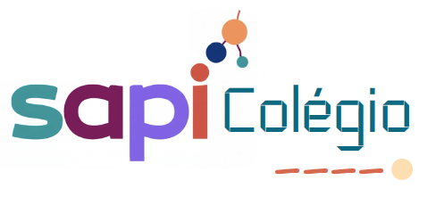

Ensino Inclusivo
Estratégias pedagógicas que valorizam diversidade, participação e adaptação às necessidades dos alunos.
A Clínica-Escola é um espaço de serviços especilizados, onde o cuidado se une ao aprendizado.

A SapiColegio constitui um espaço que combina acompanhamento terapêutico e aprendizagem orientada, promovendo o desenvolvimento integral de crianças e jovens.
Intervenções que articulam diferentes áreas da saúde e da educação, promovendo desenvolvimento emocional, social e cognitivo.
Ambientes pedagógicos organizados para apoiar o processo de aprendizagem de forma personalizada.
Profissionais de diferentes áreas trabalham de forma integrada para responder às necessidades de cada criança.
Estratégias adaptadas que respeitam o ritmo e as características de desenvolvimento de cada aluno.
O Ensino Primário da Clínica-Escola promove uma abordagem educativa que integra inclusão, acompanhamento pedagógico e desenvolvimento integral.
Estratégias pedagógicas que valorizam diversidade, participação e adaptação às necessidades dos alunos.
Acompanhamento educativo direcionado para alunos que necessitam de suporte específico no processo de aprendizagem.
Integração entre aprendizagem académica, desenvolvimento emocional e competências sociais.
Para mais informações sobre a Clínica-Escola ou o Ensino Primário, entre em contacto connosco.
Email
psicosapi@email.com
Telefone
+258 82 681 8290
Local
Maputo – Moçambique